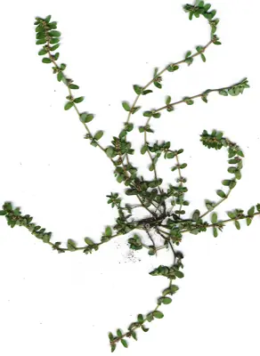

pranet · 出典付きの植物図鑑
小飞扬草 ☠
Euphorbia thymifolia L. · Euphorbiaceae

Euphorbia thymifolia, the red caustic-creeper, is a prostrate annual herb of the family Euphorbiaceae. Native to tropical and subtropical America, it grows in seasonally dry tropical biomes and produces milky sap. The plant has velvet-hairy red stems up to 25 cm (9.8 in) long, with small ovate leaves and minute cyathia flowers in the leaf axils. Widely used as a traditional medicine in Africa and Asia, it is also harvested as food and traded in local markets.
出典: Wikipedia 英語版「Euphorbia thymifolia」 · CC BY-SA 4.0
異名: Anisophyllum thymifolium (L.) Haw., Aplarina microphylla (Lam.) Raf., Chamaesyce mauritiana Commers. ex Denis, Chamaesyce microphylla (Lam.) Soják, Chamaesyce rubrosperma Millsp., Chamaesyce thymifolia (L.) Millsp., Euphorbia afzelii N.E.Br., Euphorbia botryoides Noronha, Euphorbia foliata Buch.-Ham. ex Dillwyn, Euphorbia microphylla Lam., Euphorbia philippina J.Gay ex Boiss., Euphorbia rubicunda Blume, Euphorbia rubrosperma Lotsy
同定や利用は自己責任でお願いします。この図鑑だけを根拠に野生の植物を食べないでください。
出典
- 学名: World Flora Online Plant List 2026-06 · CC0 1.0
- 名前: Wikipedia の記事名と Wikidata · CC0 1.0（Wikidata）。記事名は事実
- 説明: Wikipedia 英語版「Euphorbia thymifolia」 · CC BY-SA 4.0
- 食用・毒性: World Checklist of Useful Plant Species (Diazgranados et al. 2020, RBG Kew) · CC BY 4.0
- 分布: World Checklist of Vascular Plants (WCVP), RBG Kew, version 2026-06-04 · CC BY 3.0
このページは pranet のデータから自動生成しています。コードは MIT、データは項目ごとのライセンス（説明）。